← Back to Home
برنامج المستوى المبتدئ 30 يوم
✨ الألم الذي تشعر به اليوم، سيصبح قوة تشعر بها غدا..
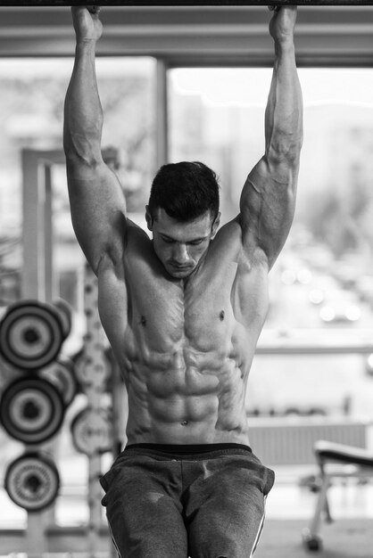 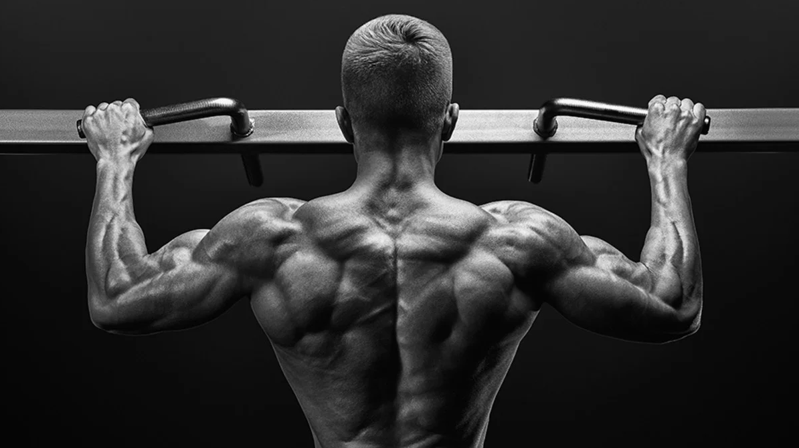 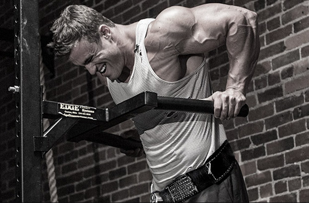
← رجوع
اليوم
1
تم إنجاز اليوم
إلغاء الإنجاز
⏱️ مؤقت الراحة
01:30
بدء
إعادة ضبط
✕ إغلاق
← السابق
التالي →
⏱️ مؤقت الراحة
01:30
بدء
إعادة ضبط
↑
 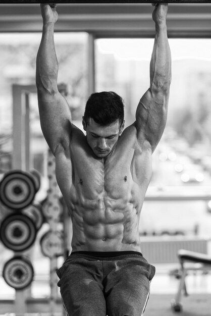
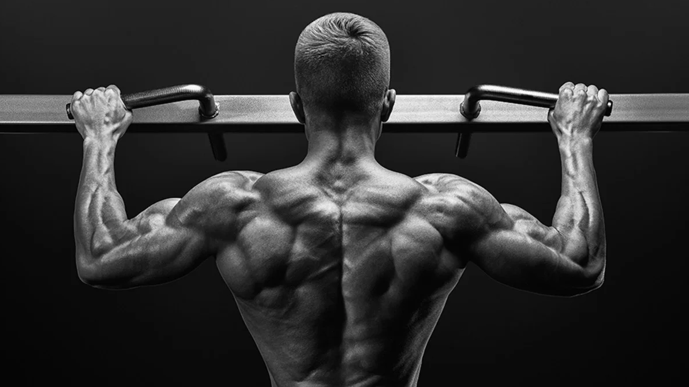
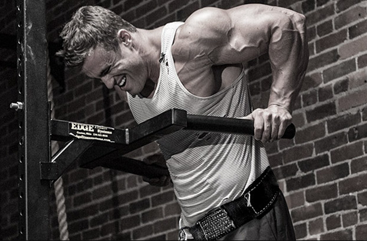
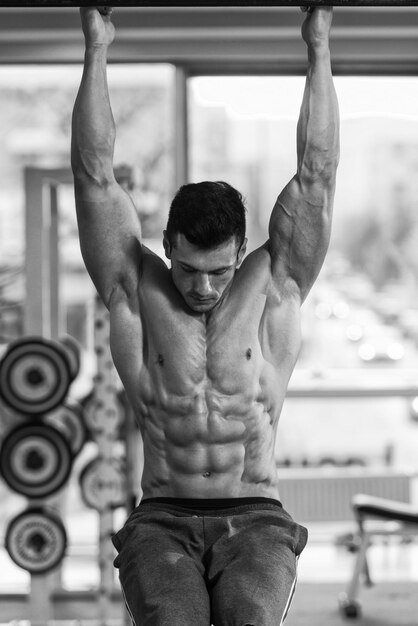
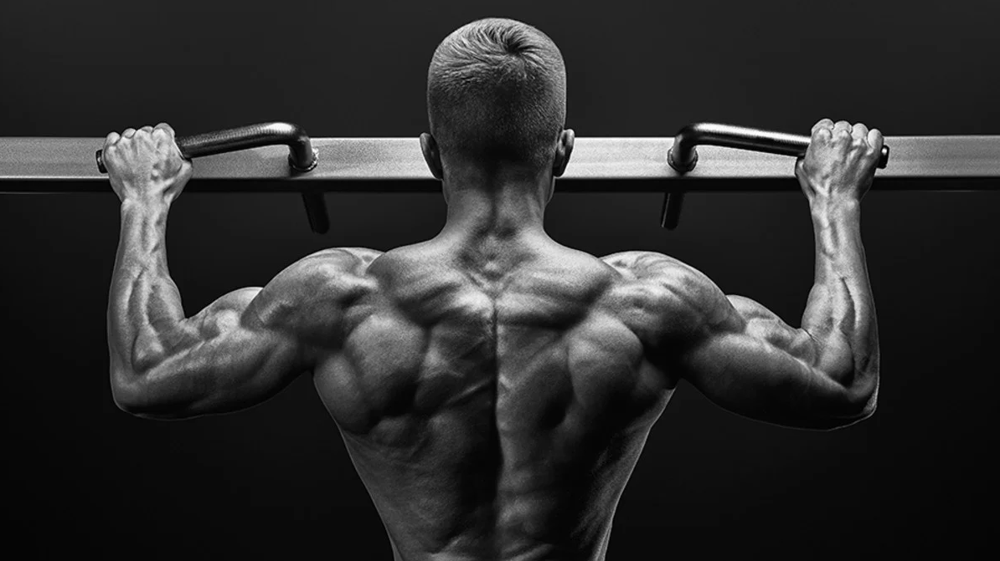
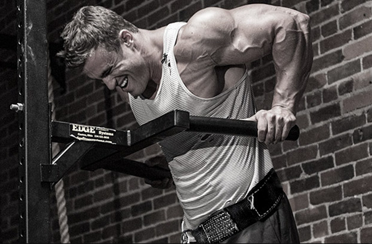
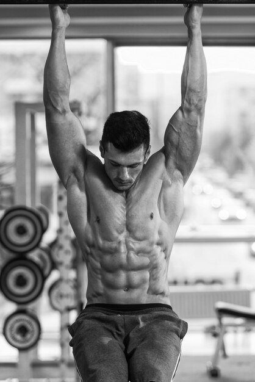
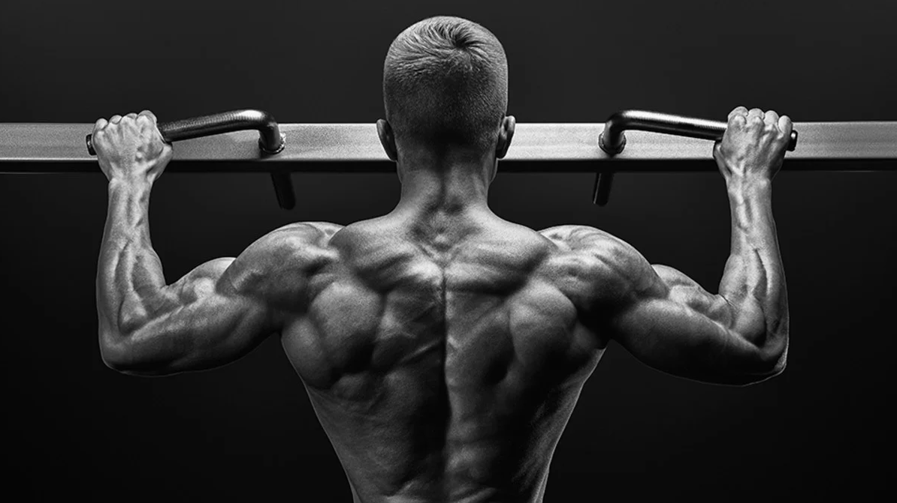
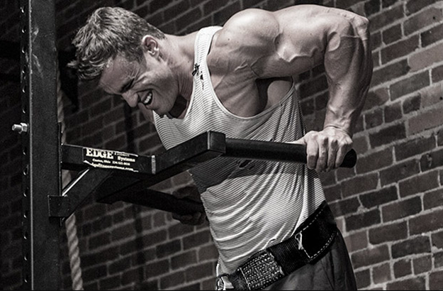
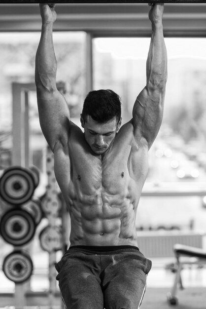
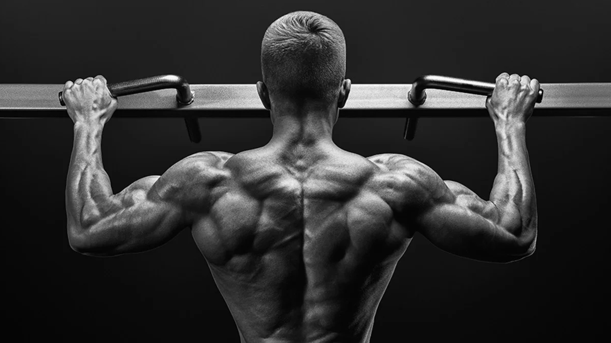
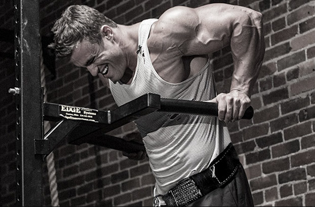